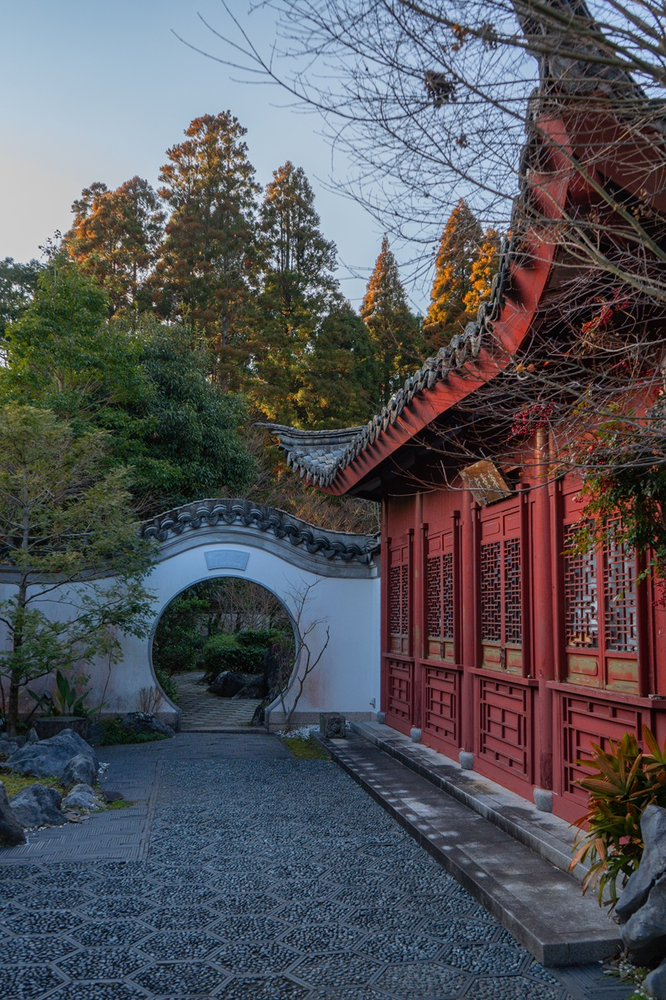
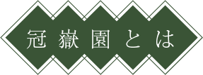
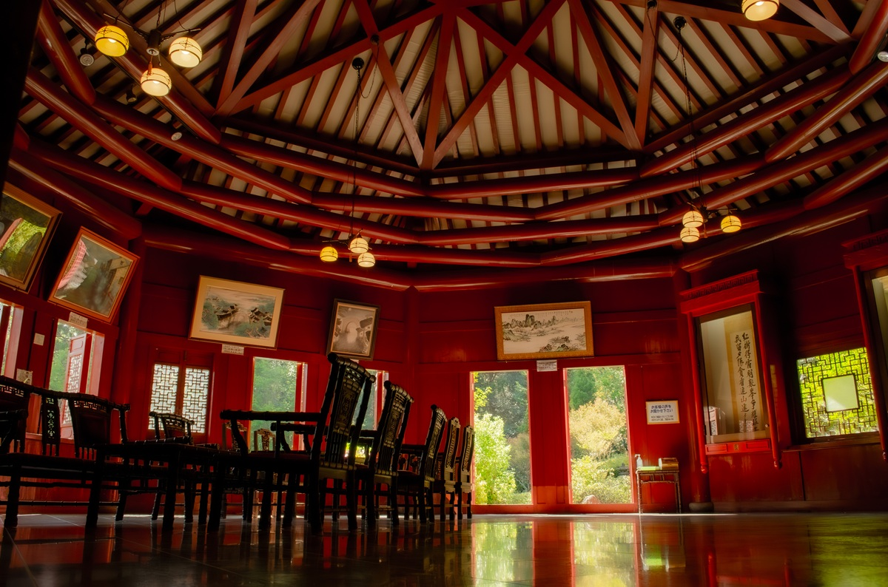
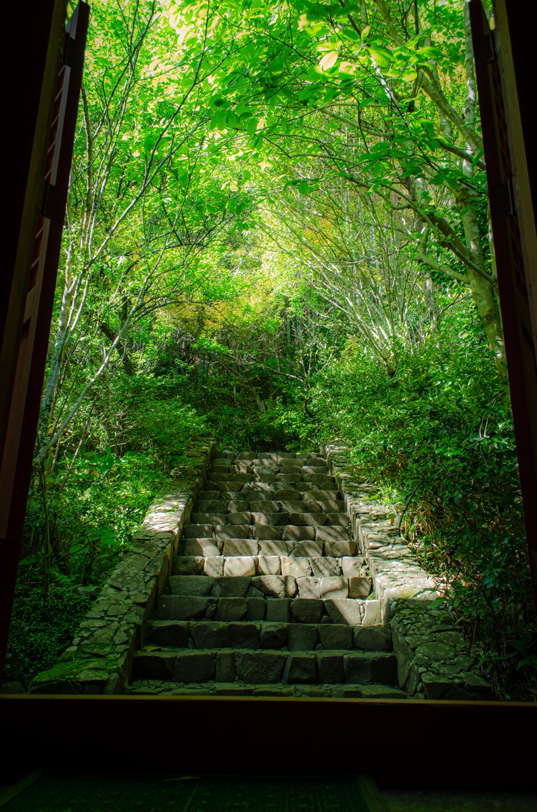
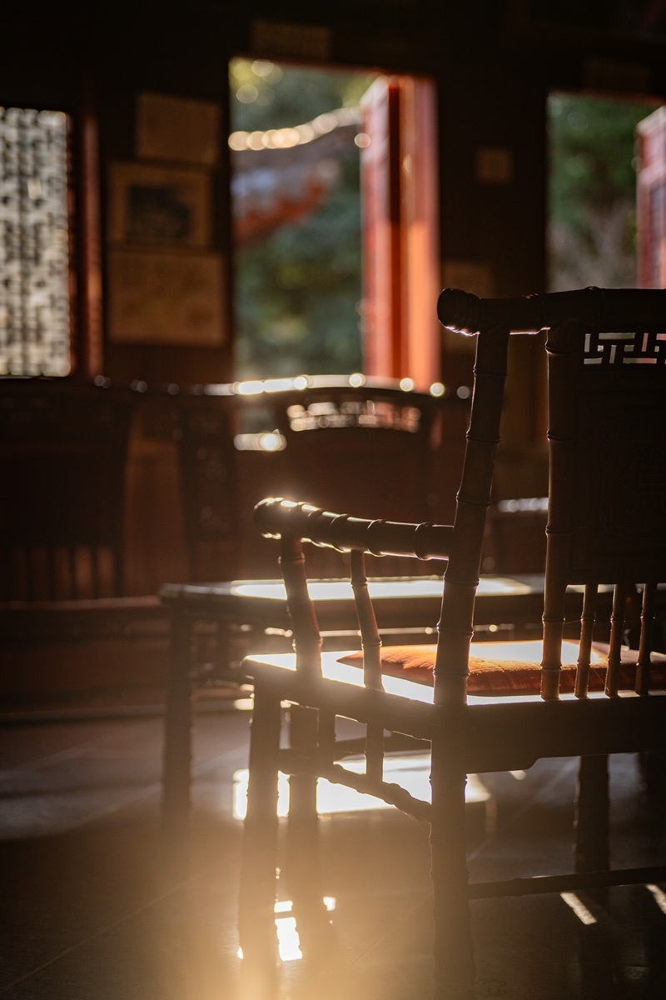
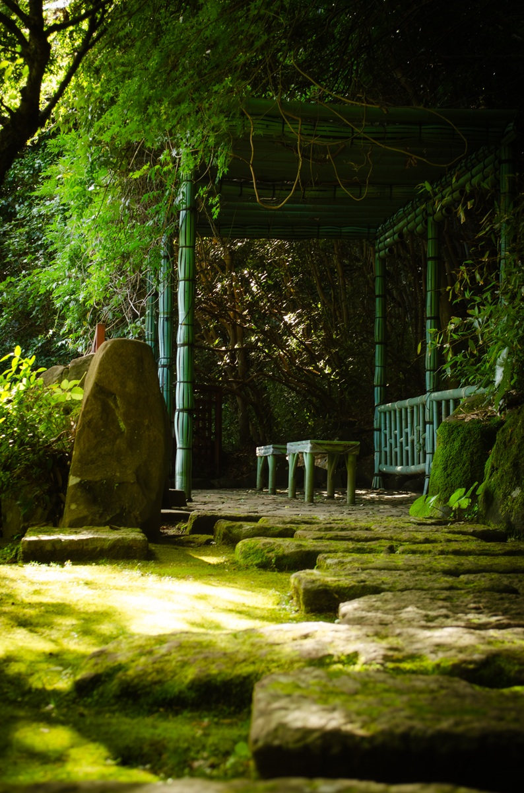
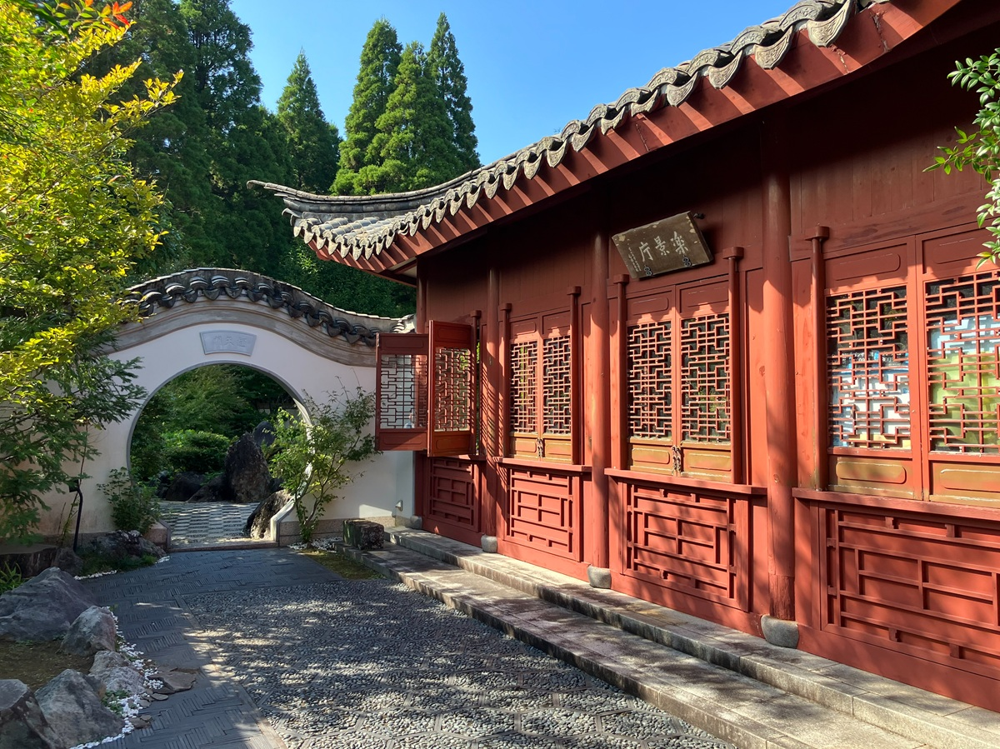
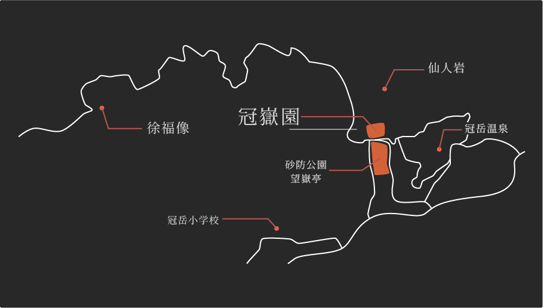

冠嶽園は、薬草の宝庫でもある山岳仏教の
名山「冠岳」の縮景と、
その名の由来である「方士徐福」の
伝承を顕現するため
頂峯院跡地に設けられた中国風庭園です。

INSIDE THE GARDEN




AROUND THE GARDEN

冠嶽神社
kanmuridake shrine
冠嶽神社は、熊野三社権現の本宮にあたる神社で、
主祭神として櫛御気命（素盞鳴命）を祀っています。
古くから山岳信仰の中心地として崇敬を集め、
地名「くしきの」の由来にも関わる歴史ある神社です。

望嶽亭
bougakutei
望嶽亭は、冠岳花川砂防公園のシンボルとして、
また中国との交流の象徴として、
旧串木野市が平成15年度（2003年度）事業として建設。
中国で設計、施工、搬送し、
中国の技術者の指導を受けて建てられた。

徐福像
statue of jofuku
串木野市制施行50周年を記念して、
2000年に日本一の徐福石像（高さ6m）を建立した。
秦の始皇帝が徐福に命じて
蓬莱の国にあるという不老不死の霊薬を求めて旅立たせ、
帰りを待ち望んでいる像が中国の秦皇島市にあり、
その像に対応するために作られた。

冠岳花川砂防公園
kanmuridake
hanakawa sabo park
10本の年代橋や多目的広場、水鏡、展望桜などがあり、
指揮を通して様々な彩りを楽しめる中国風庭園です。
アクセス

〒896-0051
鹿児島県いちき串木野市冠嶽13511-2
TEL 0996-21-5113
営業時間 9:00~17:00